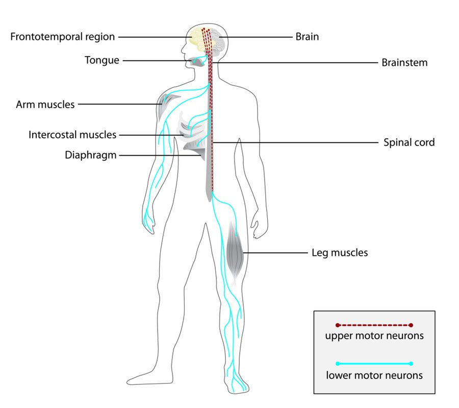

General information only. It does not replace advice from a health professional or genetic counselling.


At a glance
| What ALS is | A disease that destroys motor neurons and causes progressive paralysis |
| Familial cases | 5-10 %; genetic variants are also found in about 10 % of cases with no family history |
| Main genes | C9orf72, SOD1, TARDBP, FUS |
| Inheritance | Mostly autosomal dominant, with incomplete penetrance |
| Targeted treatment | Tofersen, for SOD1 variants |
What ALS is
Amyotrophic lateral sclerosis, also called motor neurone disease, destroys motor neurons, the nerve cells that tell muscles to move. It often begins with weakness in a hand or foot, or difficulty speaking or swallowing, and progresses to paralysis of all muscles, including those used for breathing. Median survival is 3 to 5 years from the first symptoms, although some people live much longer. About 900 new cases are diagnosed in Spain each year.
Most cases are sporadic: they appear with no family history. But in 5-10 % other relatives are affected, and this is called familial ALS.
The genes
More than 40 related genes are known. The most important are:
| Gene | Year | Share of familial ALS in Europe | Notes |
|---|---|---|---|
| C9orf72 | 2011 | About 40 % | A six-letter repeat, GGGGCC, expanded hundreds or thousands of times. Also causes frontotemporal dementia |
| SOD1 | 1993 | About 15-20 % | The first gene discovered. More than 200 different variants |
| TARDBP | 2008 | About 4 % | Encodes TDP-43, the protein that builds up in almost all ALS |
| FUS | 2009 | About 4 % | Can cause aggressive juvenile forms |
Almost all are inherited in an autosomal dominant way, but with incomplete penetrance: not all carriers become ill, and age of onset varies a lot even within one family.
An important finding is that ALS and frontotemporal dementia form a spectrum: in a family with the C9orf72 expansion, some people may have ALS, others dementia, and others both.
The first gene-targeted treatment
Tofersen is an antisense oligonucleotide given by lumbar puncture that reduces production of the toxic SOD1 protein. It was approved in the United States in 2023 and in the European Union in 2024 for people with ALS caused by SOD1 variants. In the trial, effects on function took time to show, but a marker of nerve damage, neurofilaments, fell, and in the study extension those who started earlier did better.
An ongoing trial, ATLAS, gives tofersen to SOD1 variant carriers before symptoms appear, when their neurofilaments start to rise, to try to prevent the disease. Other drugs for C9orf72 and FUS are in trials.
The rest of ALS care is the same for everyone: riluzole, multidisciplinary clinics, ventilation, nutrition and augmentative communication.
Should you be tested?
Today it is recommended to offer genetic testing to every person with ALS, with or without family history, because it can change treatment and help relatives. For healthy relatives, testing is a very personal decision, as in Huntington's disease: with incomplete penetrance, a positive result does not say whether or when someone will become ill. It should always be done with genetic counselling.
Where to learn more
- Fundación Luzón (Spain)
- adELA, Spanish ALS Association
- Orphanet: amyotrophic lateral sclerosis
See also: Spinal muscular atrophy, Huntington's disease and If my parent has a genetic condition.
Sources
- Rosen DR, Siddique T, Patterson D, et al. Mutations in Cu/Zn superoxide dismutase gene are associated with familial amyotrophic lateral sclerosis. Nature. 1993;362(6415):59-62. doi:10.1038/362059a0
- DeJesus-Hernandez M, Mackenzie IR, Boeve BF, et al. Expanded GGGGCC hexanucleotide repeat in noncoding region of C9ORF72 causes chromosome 9p-linked FTD and ALS. Neuron. 2011;72(2):245-256. doi:10.1016/j.neuron.2011.09.011
- Miller TM, Cudkowicz ME, Genge A, et al. Trial of antisense oligonucleotide tofersen for SOD1 ALS. N Engl J Med. 2022;387(12):1099-1110. doi:10.1056/NEJMoa2204705
- Goutman SA, Hardiman O, Al-Chalabi A, et al. Recent advances in the diagnosis and prognosis of amyotrophic lateral sclerosis. Lancet Neurol. 2022;21(5):480-493. doi:10.1016/S1474-4422(21)00465-8